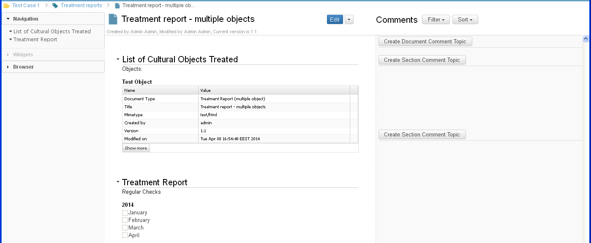
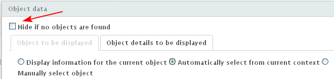
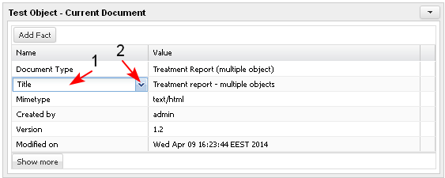
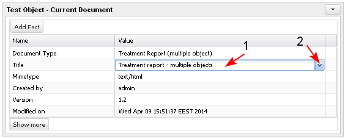

The user uses the "Object Data" widget to display certain data for any object in the system.
Select Object data widget
- The user selects the Object data widget from the widget palette and it is inserted into the current section of the iDoc automatically (1-2).
The same action may be performed also by using drag and drop the widget in the content of the iDoc.
- The widget is inserted empty and the user has to set it up. The user adds title (3) and selects the Manage Properties button (4-5).

Select "Object to be displayed"
When the button Manage Properties for the widget is selected, the system opens the screen for selecting objects to be displayed with the following sections:
- Object to be displayed (1) - selected by default. In this section the user selects the object that will be displayed in the widget.
- Display information for the current object (3) - selected by default.
- Automatically select from current context (4)
- Manually select object (5)
- Object details to be displayed (2) - in this section the user selects the details of the object represented in the iDoc that he/she wants to be displayed in the widget. This option is active by default.

Option "Display information for the current object"
- The option "Display information for the current object" (1) is selected. The user clicks "Object details to be displayed" (2).

The system opens the screen where the user selects the details of the object which should be displayed in the widget (1-2). When is ready, the user selects the OK button (3).

- The system displays the document in edit mode and the widget may be previewed.
- The labels of the data defined for the object are displayed in a list, below each other (1).
- Next to each label there is a value displayed (2). If no object is found there is no data next to the label.
- When the user is ready with the settings, he/ she saves the changes (3).

- The document is saved in the system.

Option "Automatically select object from the current context"
The user has added a Data object widget in the document and has selected option Manage Properties for that widget.
The screen for selecting objects is opened.
- The user selects the button "Automatically select from current context" (1).
- The user has to define the object type he/she is expecting to be displayed in the widget and then select the button "Search" (2)
The Search button (2) in the widget is active no matter if an object is found or not. The user could always change the auto-found object using the Reset button next to it.

- If the results from the search are more than one (1-2-3), the user must specify the search criteria in such a way that only one result to be found from the search.

- The user specifies the search criteria by in order only one result to be found from the search:
- selects the object he/she wants to be displayed (1) (this could be a project, case, task, document, specific domain object, etc.).
When the object is selected, the system displays the sub-types of objects that exists plus value "Any type".
If the user selects value "Any type" this means that in this widget would be displayed information regardless of the type of the object. In this case the system will display only the common objects attributes, like Type, Title, Description, Created by, etc.
- selects the context in which he/she wants the object to be search in (2). The user could select Case or Project.
- The user makes the search (3) and only one result is found (4).
- The user clicks "Object details to be displayed" (5).

- The system displays the specific attributes of the object. The user may add and/ or remove details (1-2). When is ready, the user selects the "OK" (3) button.

- The system displays the document in edit mode and the widget may be previewed (1). The user may update other data (2) and when ready he/she saves (3) the updated document.

- The document is saved in the system.

Option "Manually select object"
If the user selects this option he/she is able to browse and search for any object in the system and select it for display in the widget.
The user has added a Data object widget in the document and has selected option Manage Properties for that widget.
The screen for selecting objects is opened.
- The user selects the button "Manually select object" (1).
- The user selects where to look for an object to add.
- The user may select the button "Browse" for selecting and adding an object from the tree view of a selected project for which he/ she has permissions. By default the current project is selected.
- The user may select the button "Browse" for selecting and adding an object from the tree view of a selected project for which he/ she has permissions. By default the current project is selected.

- The user may select the button "Upload" for selecting and adding an object from his/ her PC.
- The user selects the button "Search" (2) for selecting and adding an object from the whole system for which he/ she has permissions.
- The user selects the button "Search" (3).
- The system displays the results (4).

The user searches for an object (1), selects it (2) and clicks "OK" (3).

- The details of the selected object appear in the widget.

- The user saves the document.
Select all details
In the section "Object details to be displayed" above all details, there is:
- option "Select All"(1) - when the option is selected all object details are selected
- option "Deselect All" (2) - when the option is selected all selected object details are deselected

Set up the widget display option
The user could set up the behavior of the widget in document Preview mode:
There is a check box in the "Object data" screen with label "Hide if no objects are found" . If the check box is selected, then in the document preview mode the widget will be hidden if no object is found, to be displayed in the widget.
Example: A template is created and we want this template to be reusable for more object types. We insert different widgets for the different object types, but in the context, the system will find only one of the object types and only one widget will be with populated data.

Edit Object Details
If the user has the respective permissions on the displayed in the widget object, the user could edit some of the object's details (Title. Description ...). Properties that are set automatically cannot be edited (Created on, Version ...).
For any data field displayed in the widget, which is empty, and which is allowed for user's input, the user is able to input new value and save it.
When different widgets use one and the same data and that data is updated in one of the widgets, then it is updated also for the other widget/s automatically.
Edit Name and Value
- The user may edit the name of the detail

- The user may edit the value of the detail

Add New Detail
- The user clicks "Add Fact" (1) button.
- A new field with label "Property" (2) opens and the user fills in the name of the new property or selects it from a drop down menu (3-4).
- The user enters value for the new property (5)
- The user selects to save (6)
If the user adds a fact for an object that could have only one value , then this fact (property) becomes inactive (disappears) in the list of available properties and cannot be added any more for the same type of object.
If the user adds a fact for an object that could have more than one values, then this fact remains active and could be selected as many times as the user wants.

- The data entered in the widget becomes part of the object details.

Add multiple values for a property
- The user adds new values for a multivalued property.
Some objects could have more than one value for a property (1-2). Then in the object data widget the user is able to add free number of values for this property.
There is a "+ " sign at the end of the row for such a property, when the document is in edit mode. The user clicks "+" (3).

- A new empty row is created for the same property. The user enters the necessary value.
The operation may be repeated many times.

- The entered values are visible in the widget (1-2-3). Added values may be deleted clicking the correspondent "x" (4) sign at the end of the row.

- The user saves the document. The entered values for the property are visible in the widget.

Display all known facts
- In the bottom of the widget there is a button "Show more" . When the user selects it:

- The system displays all known facts about the selected object. The name of the button changes to "Show less".

- When the user selects the button "Show less", the system displays in the widget only the selected details in "Object details to be displayed". The name of the button changes to "Show more".